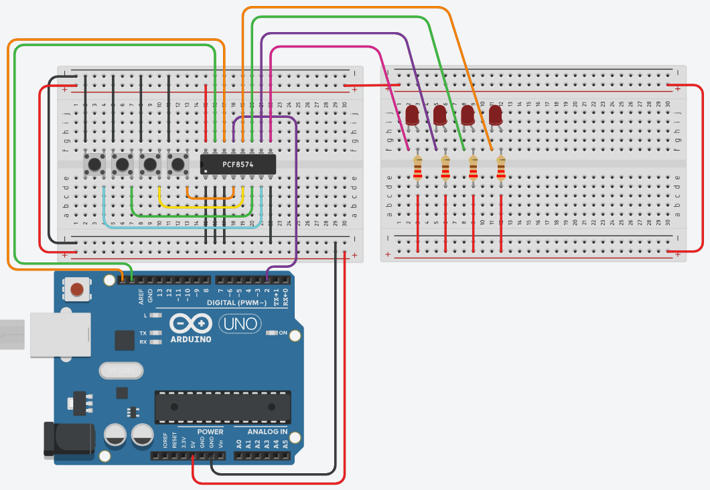

Nu gaan de leds mee op de PCF8574. Vier knoppen en vier leds op één chip, met twee draden naar je Arduino. Er zit een valstrik in waardoor je knoppen voorgoed ingedrukt lijken.
Vertrek van je vorige oefening. De knoppen blijven op P0 tot P3 staan, en de twee leds verhuizen van je Arduino naar P4 tot P7. Er komen er meteen twee bij.

| Expanderpin | Waarop |
|---|---|
| P0 t.e.m. P3 | De vier drukknoppen naar de massa, ongewijzigd |
| P4 t.e.m. P7 | Vier leds, met hun weerstand naar de plus |
| /INT | Pin 2 van je Arduino, ongewijzigd |
Naar je Arduino lopen nu nog maar drie draden: SDA, SCL en /INT. Alle acht de in- en uitgangen zitten op de expander. Dat is precies waarvoor zo'n chip bestaat.
Op je Arduino hing een led altijd met zijn anode aan de pin en zijn kathode via een weerstand naar de massa: sourcing. Hier gaat dat niet.
Een uitgang van de PCF8574 kan een flinke stroom naar de massa afvoeren, maar kan er nauwelijks stroom uit leveren: ongeveer 4 mA in het beste geval, en daar gaat een led niet fatsoenlijk van branden. De chip kan dus wel goed sinken en slecht sourcen.
Daarom hangt elke led met zijn weerstand aan de plus, en met zijn kathode aan de expanderpin. De stroom loopt van de plus door de led naar de chip. Een led brandt dus bij een 0 en dooft bij een 1. Dat heet actief laag.
Het is precies de sinking-schakeling uit Sourcen en sinken, en je hebt hem in leds aansturen via de PCF8574 in labo 4 al eens gebruikt. Alleen de reden is nu expliciet: de chip kán niet anders.
Met 220 Ω trekt elke led ongeveer 17 mA. Vier leds tegelijk is dan bijna 70 mA die allemaal door de massapin van één chipje moeten. Dat is te veel voor de PCF8574, ook al kan één enkele pin die stroom aan.
Met 470 Ω of 1 kΩ zit je op 4 tot 8 mA per led. Ze branden iets minder fel en je chip blijft heel.
Elke knop bedient de led die ernaast ligt, en zolang je drukt:
| Knop | led |
|---|---|
| P0 | P4 |
| P1 | P5 |
| P2 | P6 |
| P3 | P7 |
Laat je de knop los, dan dooft de led weer. De led volgt de knop dus gewoon.
Omdat de led de knop volgt en niet omschakelt, hoef je hier geen flanken te detecteren en niet te ontdenderen. Stuitert je knop een paar milliseconden, dan flikkert je led een paar milliseconden mee. Dat ziet niemand.
Dezelfde hardware als de vorige oefening, een andere eis, en ineens veel minder code. Weten wáárom je iets nodig hebt, bepaalt of je het deze keer nog moet schrijven.
Dit is de reden dat deze oefening drie pepers krijgt, en je loopt er gegarandeerd in.
De PCF8574 heeft geen manier om te zeggen welke pin een ingang is en welke een uitgang. Er is maar één opdracht, en die schrijft alle acht de bits tegelijk. Schrijf je een byte om je leds aan te sturen, dan zet je dus ook de vier bits van je knoppen.
Een pin van de PCF8574 werkt alleen als ingang zolang hij hoog staat. Zet je hem laag, dan houdt de chip hem zelf aan de massa, en dan verandert er niets meer als je op de knop duwt: de pin stond al laag.
Je leest die knop dus af als voor altijd ingedrukt, en je krijgt ook geen /INT-melding meer. Je programma lijkt volledig vast te lopen terwijl er niets mis is met je code, alleen met één byte die je verstuurd hebt.
Dit staat ook in de waarschuwing op De PCF8574, en het is dezelfde reden waarom je in je setup() 0xFF moet schrijven voor je iets kan lezen.
De byte die je schrijft moet er dus altijd zo uitzien:
byte teSturen = B????1111;
// ^^^^ ^^^^
// | |
// | de vier knoppen: ALTIJD 1
// de vier LEDs: 0 is aan, 1 is uitIn C++ mag je hetzelfde getal op drie manieren opschrijven. Deze drie regels betekenen exact hetzelfde:
byte decimaal = 247;
byte hexadecimaal = 0xF7;
byte binair = B11110111;Voor deze oefening is de binaire vorm veruit de handigste, want je ziet meteen welke led brandt en welke knoppin hoog blijft staan.
Begin je byte bij 0xFF, dus alle bits op 1. Dan staan je vier knoppinnen meteen goed en zijn al je leds uit. Vervolgens zet je alleen de bits op 0 van de leds die moeten branden. Zo kan je onmogelijk per ongeluk een knoppin platleggen.
Handig daarbij zijn bitRead() en bitClear(). Zie Bits.
Sla je oefening op.
Overloop volgende checklist om je oefening zelf te evalueren:
De loop() is korter dan die van de vorige oefening. Geen vorigeKnoppen, geen flankdetectie, geen ontdendering: de led volgt de knop, en meer moet dat niet zijn.
#include <Wire.h>
const int adresExpander = 0x38; // controleer met de I2C scanner
const int intPin = 2;
volatile bool expanderVeranderd = false;
void expanderVeranderde()
{
expanderVeranderd = true;
}
void schrijfExpander(byte waarde)
{
Wire.beginTransmission(adresExpander);
Wire.write(waarde);
Wire.endTransmission();
}
byte leesExpander()
{
Wire.requestFrom(adresExpander, 1);
if (Wire.available())
{
return Wire.read();
}
return 0xFF;
}
void setup()
{
pinMode(intPin, INPUT_PULLUP);
Wire.begin();
// 0xFF doet hier twee dingen tegelijk: P0 tot P3 hoog zodat je de knoppen
// kan uitlezen, en P4 tot P7 hoog zodat de LEDs gedoofd zijn. Die staan
// immers actief laag, want de PCF8574 kan wel sinken maar niet sourcen.
schrijfExpander(0xFF);
leesExpander(); // een /INT die al actief was wissen voor we luisteren
attachInterrupt(digitalPinToInterrupt(intPin), expanderVeranderde, FALLING);
}
void loop()
{
if (expanderVeranderd == false)
{
return;
}
expanderVeranderd = false;
byte knoppen = leesExpander();
// Begin bij alle bits op 1. De vier laagste blijven zo vanzelf staan, en
// dat moet ook: een 0 op P0 tot P3 legt die ingang plat en dan lijkt je
// knop voorgoed ingedrukt. De vier hoogste zijn nu allemaal "LED uit".
byte teSturen = 0xFF;
for (int i = 0; i < 4; i++)
{
if (bitRead(knoppen, i) == 0) // knop i is ingedrukt
{
bitClear(teSturen, i + 4); // LED i aan, want actief laag
}
}
schrijfExpander(teSturen);
}i + 4 is de hele oefeningKnop 0 zit op bit 0, en zijn led op bit 4. Knop 1 op bit 1, led op bit 5. Vandaar dat ene + 4: het schuift je van de onderste helft van de byte naar de bovenste.
Merk ook op dat de for-lus tot 4 loopt en niet tot 8. De bovenste vier bits van knoppen zijn geen ingangen, daar lees je gewoon terug wat je er zelf op gezet hebt.
Omdat een ingedrukte knop een 0 geeft én een brandende led een 0 nodig heeft, valt de onderste helft van de byte precies op de bovenste te schuiven:
byte teSturen = ((knoppen & B00001111) << 4) | B00001111;Kort, en volstrekt onleesbaar tot je het drie keer gelezen hebt. Voor je eigen oplossing is de lus beter: die laat zien wát je doet en waarom die laagste vier bits op 1 blijven. Maar het is nuttig om te zien dat het kan, want zo staat het in echte code vaak wel geschreven.
Je zou hier ook gewoon elke ronde de expander kunnen uitlezen zonder interrupt, en het zou werken. Waarom dan die /INT?
Omdat je nu alleen over de I²C-bus praat wanneer er echt iets veranderd is. Pollen betekent duizenden overdrachten per seconde over een bus die je misschien met vijf andere chips deelt. Bij één expander merk je dat niet; bij een echte installatie is het het verschil tussen een bus die ademruimte heeft en eentje die verzadigd is.